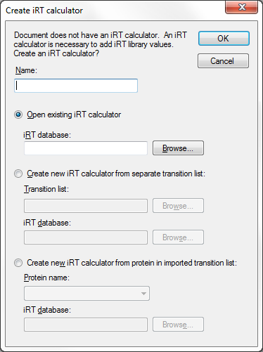
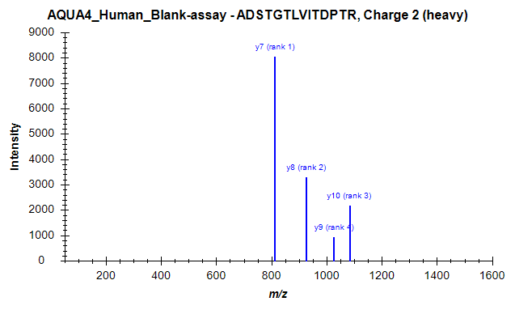

With some other SRM and DIA tools an extended transition list format called an “assay library” has become popular. The assay library format adds relative ion abundance, extracted from spectral libraries, and iRT (normalized retention time) information to other common transition list information (e.g. protein name, peptide sequence, precursor m/z and product m/z). As with a transition list, an assay library usually contains information for a subset of peptide fragment ions (e.g. 6-10), interpreted as the best ions to measure for a peptide of interest on a particular system. The assay library format is usually tabular text (.csv/.txt/.tsv), like a transition list, but they can also be specified using TraML. Prior to version 2.6, importing a full assay library into Skyline involved several steps: the transition list and iRT values needed to be imported separately, and transition intensities could not be imported at all (instead the user needed to find the original SpectraST, BiblioSpec, or NIST spectral library file containing the raw spectra).
It is now possible to import or paste a full assay library into Skyline with a few clicks, meaning that an assay library can easily be integrated into a Skyline document (complete with iRT’s and pseudo reference spectra containing relative transition intensities for all peptides). An assay library produced outside of Skyline can now be quickly and easily “ported” into Skyline without losing information important to targeted analysis.
In this tutorial, you will learn how to import assay libraries in tab-separated values [.tsv] format. Skyline can also read comma-separated values [.csv]. Currently, Skyline cannot read an assay library in TraML format, though this may change in the future.
To start this tutorial, download the following ZIP file:
https://skyline.gs.washington.edu/tutorials/ImportingAssayLibraries.zip
Extract the files in it to a folder on your computer, like:
C:\Users\damodei\Documents
This will create a new folder:
C:\Users\damodei\Documents\ImportingAssayLibraries
It will contain all the files necessary for this tutorial. Open the file AQUA4_Human_Blank.sky in this folder, either by double-clicking on it in Windows Explorer, or by choosing Open from the File menu (Ctrl-O) in a running instance of Skyline.
You will be starting with an empty Skyline document which you are going to populate with all important information contained in an assay library. The document you have opened is blank, aside from some peptide and transition settings. The peptide settings include heavy labeled modifications that will be present in the assay library you paste in, and the transition settings tell Skyline which fragment ions from the assay library to accept. If you were doing this on you own, you would need to ensure these settings match your assay library before you import or paste it into a document. For a more detailed treatment of setting up a document for transition list import, consult the Existing and Quantitative Experiments tutorial.
Find the two files ExperimentAssayLibrary.csv and IrtStandardAssayLibrary.csv in the ImportingAssayLibraries folder you created. The first file contains the assay library for the 345 measured peptides in the OpenSWATH Gold Standard data set1. The second file contains the assay library for 10 iRT standard peptides, which can be used to calibrate the retention times of all 345 peptides accordingly.
The file should look like this:
Notice that the file has columns for precursor m/z, product m/z, peptide sequence, protein name, iRT value (“Tr_recalibrated”), and spectral library intensity (“LibraryIntensity”) (as well as several other columns which Skyline will ignore). More generally, Skyline is able to read the following columns in a transition list:
| Column | Acceptable Names | Meaning | Optional or Required? |
| Library intensity for transition | LibraryIntensity | Relative intensity of the transition | Optional |
| iRT value | Tr_recalibrated | iRT value of the peptide corresponding to this transition | Optional |
| Protein | [Any](Skyline can infer from entries) | Protein name (in this example the protein name indicates which batch the peptides are belonging to rather than an actual protein name) | Optional |
| Peptide | [Any](Skyline can infer from entries) | Modified sequence of the peptide. Modifications can be indicated in name, mass, or UniMod notation (see last page of tutorial for details). | Required |
| Precursor m/z | [Any](Skyline can infer from entries) | Which precursor(s) for each peptide should be included in the document. | Required |
| Product m/z | [Any](Skyline can infer from entries) | Mass to charge ratio of the product ion | Required |
| Is transition a decoy? | decoy | For documents where the same peptide occurs as a target and as a decoy peptide. 0/False means decoy, 1/True means non-decoy. | Optional |
Any or all of the optional columns can be missing. If the “decoy”, “LibraryIntensity”, or “iRT”/“Tr_recalibrated” column is present, then the table must have a title row in order for Skyline to identify these columns; if none of these columns are present, the title row can be missing.
Note: This file contains two columns with the peptide sequence “PeptideSequence” and “FullUniModPeptideName”. Often Skyline can guess modifications from the precursor and product m/z values, but it can become confused when a file contains peptide-isoforms, or two instances of the same peptide sequence differing only by the location of a modification. Providing Skyline with peptide sequence column that explicitly specifies all modifications and their locations can alleviate this problem. However, Skyline may choose a bare peptide sequence column, if it appears before the modified sequence column, and Skyline can match the bare sequence to the precursor m/z. To avoid this potential pitfall with the current file, do the following:
This is not actually necessary for this file, because it contains no peptide-isoforms, but knowing about this import issue can save a lot of confusion.
We will now add both the experiment assay library and the iRT assay library to the Skyline document.
You should see the following window, which informs you that Skyline has detected iRT values for the transitions you have pasted in:
You should now see the following window:

The empty document you opened does not yet have an iRT calculator or iRT standard peptides specified. Therefore, the iRT values in the assay library cannot be stored or used. Skyline offers you the opportunity to either choose an existing iRT calculator containing the standards for this transition list, or specify iRT standard peptides and import iRT values of all target peptides to create a new iRT calculator. If you choose to create a new iRT caclutor, you can either use standards in a separate list, or in the peptides of a single protein of the transition list you are importing. In this tutorial, you will create a new iRT calculator using a separate list by doing the following:
You should now see the following window:
This informs you that Skyline has detected transition intensities in the assay library you have pasted in.
The operation should finish, and the Skyline document should now contain transition nodes, iRT values, and spectral library intensities for all 345 of the experiment peptides and also all 10 of the iRT standard peptides. The document tree should look as follows:
Click on the first peptide (ADSTGTLVITDPTR) in the document tree. The newly created library spectrum for this peptide should appear in the Library Match view, with four peaks from the ions y7-y10:

You can also browse this newly generated spectral library in the Spectral Library Explorer by doing the following:
The spectral library was named the same as your current Skyline document, “AQUA4_Human_Blank-assay”.
Now do the following to check the iRT values of the experiment peptides and the standard peptides.
Skyline should show the Edit iRT Calculator form like this:
As you can see, the 10 standard peptides and the 345 experiment peptides have both been added to the iRT database.
You now have a Skyline document containing all the transitions, their relative intensities in form of pseudo spectra, and their iRT’s that were in the original assay library. Now your Skyline document is ready to import and analyze your data.
Assay library import is a new feature in Skyline and still has some situations it doesn’t handle well. We are working on fixing these limitations, but in the meantime all of them luckily have an easy workaround:
These problems can be frustrating if you are not expecting them, but once you know about them, a minute or two of work in Excel is all it takes to fix them.
In this brief tutorial you have learned how to quickly import an assay library into a blank Skyline document, producing a Skyline document with all the information from the assay library. Assay library data can also be imported in some ways not described in this tutorial, including adding to existing iRT databases rather than creating new ones. However, you have seen the basics of how to turn an assay library into a Skyline document.
1. Hannes L. Röst et al. OpenSWATH: A tool for the automated, targeted analysis of data-independent acquisition (DIA) MS-data. Nat. Biotechnol. doi:accepted